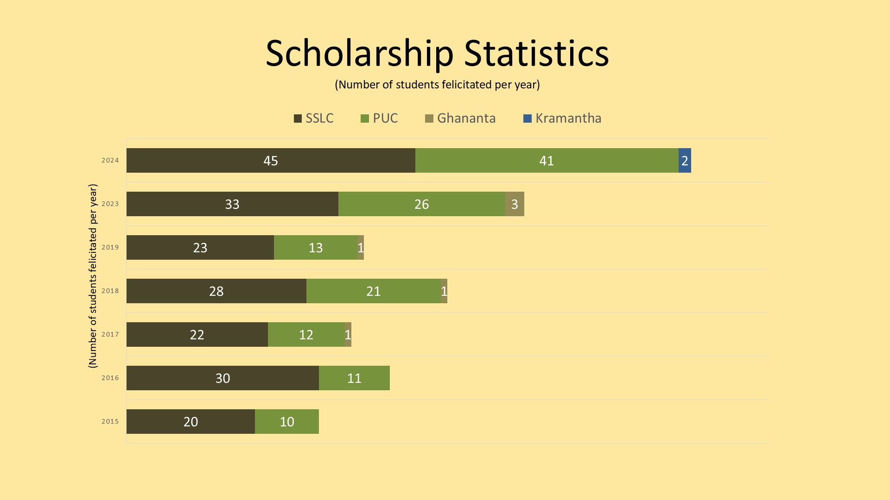

Welcome to Scholarship Details
This page is dedicated to listing the scholarship events that happen annually from Sri Shukla Yajurveda Yuvaka Sangha.

This page is dedicated to listing the scholarship events that happen annually from Sri Shukla Yajurveda Yuvaka Sangha.